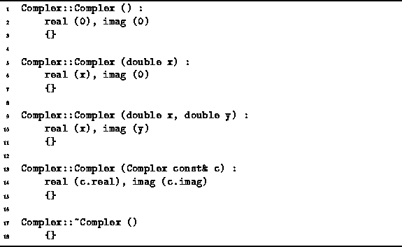

Data Structures and Algorithms
with Object-Oriented Design Patterns in C++
Data Structures and Algorithms
with Object-Oriented Design Patterns in C++The constructor which takes no arguments is called the default constructor . E.g., the default constructor is invoked when a variable is declared like this:
Complex c;In fact, the compiler will generate its own default constructor for a class provided that no other constructors have been defined by the programmer. The compiler generated default constructor initializes the member variables of the class using their respective default constructors.
Program  gives the implementation of the default
constructor of the Complex class.
Because the implementation the member function is given outside
of the class definition,
the name of the function is prefixed with the class name
followed by ::.
gives the implementation of the default
constructor of the Complex class.
Because the implementation the member function is given outside
of the class definition,
the name of the function is prefixed with the class name
followed by ::.

Program: Complex Class Constructors and Destructor
The default constructor explicitly invokes the constructors for the member variables real and imag (line 2). After the member variables have been initialized, the body of the constructor runs. In this case, the body of the constructor is empty (line 3).
 Copyright © 1997 by Bruno R. Preiss, P.Eng. All rights reserved.
Copyright © 1997 by Bruno R. Preiss, P.Eng. All rights reserved.